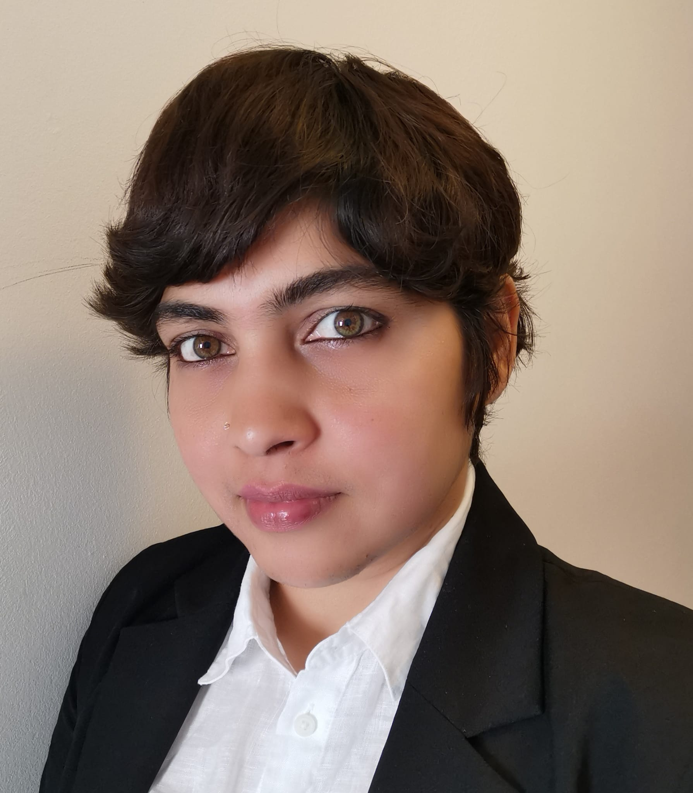

About Me

I am a dedicated AI researcher with a profound curiosity for the evolving landscape of artificial intelligence. My work focuses on exploring cutting-edge technologies and developing innovative solutions to advance the field. This passion drives me to continually seek deeper understanding and uncover new insights. Below, you can access my CV and review my publications to learn more about my research and contributions.
Curriculum Vitae
Download my CV from the link below:
Download CV
Publications
Here are some of my notable publications:
-
Divya Thekke Kanapram, Lucio Marcenaro, David Martin Gomez, Carlo Regazzoni
Graph-Powered Interpretable Machine Learning Models for Abnormality Detection in Ego-Things Network
[PDF]
Sensors, 2022
-
Divya Thekke Kanapram, Mario Marchese, Eliane L. Bodanese, David Martín Gómez, Lucio Marcenaro ,and Carlo Regazzoni
Dynamic Bayesian Collective Awareness Models for a Network of Ego-Things
[PDF]
IEEE Internet of Things Journal, VOL. 8, NO. 5, March 2021
-
Divya Thekke Kanapram, Fabio Patrone, Pablo Marin-Plaza, Mario Marchese, Eliane L. Bodanese, Lucio Marcenaro , David Martín Gómez ,and Carlo Regazzoni
Collective Awareness for Abnormality Detection in Connected Autonomous Vehicles
[PDF]
IEEE Internet of Things Journal, VOL. 7, NO. 5, MAY 2020
-
Divya Thekke Kanapram, Pablo Marin-Plaza, Lucio Marcenaro, David Martin, Arturo de la Escalera and Carlo Regazzoni
Self-awareness in Intelligent Vehicles: Feature-Based Dynamic Bayesian Models for Abnormality Detection
[PDF]
Robotics and Autonomous Systems Journal,Volume 134, 2020
-
Divya Thekke Kanapram,Pablo Marin-Plaza, Lucio Marcenaro, David Martin, Arturo de la Escalera and Carlo Regazzoni
Self-Awareness In Intelligent Vehicles: Experience-Based Abnormality Detection
[PDF]
ROBOT 2019:Fourth Iberian Robotics Conference, pp 216-228
-
Divya Thekke Kanapram, Damian Campo, Mohamad Baydoun, Lucio Marcenaro, Eliane L. Bodanese, Carlo Regazzoni and Mario Marchese
Dynamic Bayesian Approach for Decision-Making in Ego-Things
[PDF]
2019 IEEE 5th, World Forum on Internet of Things (WF-IoT)
- PhD thesis - Title: Ego things: Networks Of Self-Aware Intelligent Objects. Multi-modal dynamic Bayesian models for self-awareness and collective awareness in agents’ network : The research aimed to develop a hierarchical dynamic Bayesian Network using data-driven methods, incorpo- rating self-awareness and collective awareness in intelligent agent networks for anomaly detection, decision- making, and incremental learning of new models from new experiences. Machine learning, signal processing, and IoT were utilized to implement these functionalities while analyzing the effects of networking protocols and communications. The model was further enhanced with interpretability by applying graph-matching techniques.
Public URL: Access the thesis
[PDF]
-
A framework to correlate power consumption and resource usage in cloud infrastructures
-
Exploring the trade-off between performance and energy consumption in cloud infrastructures
Certifications
Here are some of the certifications I have obtained:
- Project Management Professional (PMP) - The Project Management Professional (PMP) certification, awarded by PMI, validates expertise in managing and leading projects, demonstrating proficiency in project management principles and practices.
- Generative AI - The Generative AI course explores techniques and applications for creating advanced AI models that generate new content, such as text, images, and other media, based on learned patterns from data.
- Introduction to Large Language Models - Provides foundational knowledge on how large language models work, their applications, and their impact on natural language processing and artificial intelligence.
-
Deep Learning with Python and Keras
- Develop and implement deep learning models for images, text, and other data types using Python and Keras.
-
Complete Guide to TensorFlow for Deep Learning with Python
- Master Google's TensorFlow framework with Python to solve problems using cutting-edge deep learning techniques.
-
RAG and FineTuning